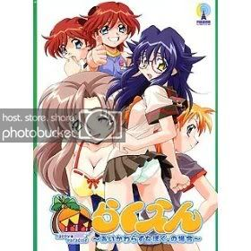
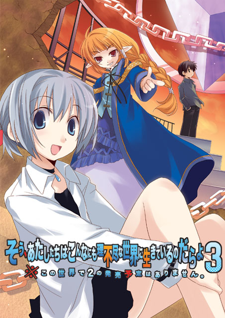

[转]浅谈几个MetaGame（剧透注意）
MetaGame取自MetaFiction
日文
(wiki)メタフィクション：
http://ja.wikipedia.org/wiki/%E3%83%A1%E3%82%BF%E3%83%95%E3%82%A3%E3%82%AF%E3%82%B7%E3%83%A7%E3%83%B3中文
(baidu百科)元小说：
http://baike.baidu.com/view/706949.htm简单来说就是，通过游戏的形势来描述游戏本身，描述游戏制作者本身，描述游戏中的人物，描述游戏玩家，的游戏。
デウス=エクス=マキナ(Deus ex machina)
日文：
http://ja.wikipedia.org/wiki/%E3%83%87%E3%82%A6%E3%82%B9%E3%83%BB%E3%82%A8%E3%82%AF%E3%82%B9%E3%83%BB%E3%83%9E%E3%82%AD%E3%83%8Ahttp://d.hatena.ne.jp/keyword/%A5%C7%A5%A6%A5%B9%A1%A6%A5%A8%A5%AF%A5%B9%A1%A6%A5%DE%A5%AD%A5%CA用例
1、Maker,Circle名
2、Scenario Writer名
3、知名度
4、Meta以外——指游戏中，抛去Meta的部分还能享受的乐趣的程度
5、Meta比重——指Meta设定占整个游戏内容的比重，或者说是用来评价「删去Meta部分后游戏是否还能成立」的标准
6、逻辑严密度——指非都合程度。
指作者是否倚仗Meta设定进行方便作者本人的展开。
简单来说，主人公是否有一个稳定的身份，还是随着不同展开而随意变动。
依照Meta的设定来说，玩家角色的人格应该是在「New Game」之后形成的。所有游戏所展现的内容都应该是针对于玩家视点的。不能有非玩家视点的内容出现在游戏里。
满足这样条件的严密度就较高。
7、Meta深度——指作者站在Meta的角度上，通过故事的形式对故事的存在本身进行思考，通过erogame的形式对erogame本身进行思考的深入程度。
8、角色自觉——指游戏中的登场角色是否察觉到自己是被造物，是作家制造出来满足erogame玩家的空壳。
9、主人公／玩家——指主人公和玩家的关系
10、游戏时间——大致攻略时间
11、主题——指本作讨论的主题。
■らくえん～あいかわらずなぼく。の場合～
TerraLunar
連悠太
知名度 ★★★★★★★★★
游戏时间：18～22小时
进入正篇之前，我想先说一下这部被一部分狂热信者捧为无上神作的「らくえん」
之所以没有把らくえん放在正篇里是因为这部的确比较特殊，它和之后要提到的MetaGame都不同。
在「以erogame的形式描述erogame的制作，制作erogame的人」这个水平上，的确是一种自我言及。
但同时它也作为一个故事可以独立存在，就算没有读者它也可以以故事的形势存在。
而在正篇将要介绍的大都是没有读者就无法存在的游戏。
それじゃ、堕落する準備はＯＫ？

■EVER17
KID
打越鋼太郎、中澤工
知名度 ★★★★★★★★★
Meta以外 ★★★★★★★★★
Meta比重 ★★
逻辑严密度 ★★★★★★★★
Meta深度 ×
角色自觉 ×
主人公＝玩家
玩家＝主人公／高次元存在
游戏时间：25～30小时
主题 无
首先从大家都十分熟悉的Ever17开刀。
EVER17恐怕是很多人第一个遇到的MetaGame，最后玩家们发现目睹整个故事的真正的主人公其实是坐在电脑前的自己的时候，很多人都震撼了。EVER17通过巧妙的手法把身处2D世界之外的玩家卷入了游戏之中，那一刻大家才知道原来这是一个MetaGame。
正如上面的量表所示：Meta元素以外的内容也有不少，玩家单纯把主人公当作高次元存在，把游戏中的角色当作和自己一样级别的存在也是完全没有问题，完全可以享受此游戏的，所以说Meta比重也非常低。
而正是EVER17巧妙的Trick要求它相当高的逻辑严密性，因为任何展现出来的东西都是给第三视点看的，给玩家展现什么不展现什么都是经过两个人精心算计的，中途没有致命的因文学性的叙述造成的逻辑漏洞。
Ever17这种Meta深度为×的游戏也非常典型，就是纯粹借助Meta的设定来完成自己的故事，而不在Meta的角度对自身的存在进行反思。
游戏中的角色也完全没有自觉，思考不认为自己是被造物，而认为自己是有自主性的人。
此作比较大众化也比较有趣，推荐所有人。

■2nd LOVE
Force
深沢豊
知名度 ★
Meta以外 ★
Meta比重 ★★★★★★★★★★
逻辑严密度 ×
Meta深度 ×
角色自觉 ×
主人公＝主人公人格
玩家＝读者／旁观者
游戏时间：3～4小时
主题 （无）
被小部分minor玩家捧为至爱的深沢豊至今知名度不高。
至少我没见过喜欢深沢作品的人推荐过他的作品，喜欢深沢作品的人大都比较孤高，喜欢在一些帖子的角落随口甩出深沢作品的名字随之拂袖而去。
2nd LOVE和别的几个MetaGame都不太一样。
其他的MetaGame基本上建立在 游戏←→现实的基础上。而2nd LOVE建立在 剧中剧←→游戏的层次上。
2nd LOVE并没有跳出2D世界。
此作是非常典型的深沢豊Game，「卖的就是最后的设计，一切其余元素都为最后的陷阱服务」。
简而言之除了精心设计的陷阱并没有别的看点。从Meta比重就可以看出此作删去Meta部分就根本无法存在，而除了Meta部分也就没有任何看点。
因为故事在剧中剧内部展开，所以没有讨论是否都合、逻辑是否严密的必要。
从Meta深度可以看出，和EVER17一样，2nd LOVE也是一个借鉴Meta设定来完成自己的故事的类型，并没有站在Meta的角度进行讨论。
推荐喜欢看Trick的人。
关注「角色魅力」、「有趣对话」、「传统故事的起承转折的基本功」的人不推荐，恐怕不会觉得有趣。

■忘れものと落とし物
LANGuex
深沢豊
知名度 ★
Meta以外 ★★★
Meta比重 ★★★
逻辑严密度 ★★★★★
Meta深度 ×
角色自觉 ×
主人公＝主人公人格
玩家＝彼女C
游戏时间：3～4小时
主题 （无）
忘れものと落とし物可以说是2nd LOVE（尤其是在Meta方面）的进化型。
「忘れものと落とし物」从之前「2nd LOVE」的【剧中剧←→游戏】进化到了【剧中剧←→游戏←→现实】的地步。
「忘れものと落とし物」像EVER17一样把3D世界的我们卷入到了游戏中，但因为此作逻辑严密性方面的铺设不如EVER17那么充裕，此作并没有真的带给玩家「被卷入」的感觉。更多的是一种「哦，原来是这么设定的啊」
依旧保持深沢豊的风格——卖设计。
此作也是稍稍借用了Meta设定完成的故事。从三星的Meta比重上也可以看出Meta本身并不算十分重要。
推荐喜欢看Trick的人。
关注「角色魅力」、「有趣对话」、「传统故事的起承转结的基本功」的人不推荐，恐怕不会觉得有趣。

■Remember11
KID
中澤工、打越鋼太郎
知名度 ★★★★★
Meta以外 ★★★★★★
Meta比重 ★★★★★★★★★
逻辑严密度 ★★★★★★★★★★
Meta深度 ★★★★
角色自觉 ×
主人公＝玩家
玩家＝主人公／高次元存在
游戏时间：20～25小时
主题 （无）
从打越核心换成了中澤核心，整个R11的逻辑严密性比E17上升了一个档次，但也因此大大削弱了故事本身的魅力。
R11的逻辑严密性高的让人不可思议，至少我自己没想到竟然有人能做到这种程度。
从Meta比重上可以看出，R11几乎是除去Meta元素就根本无法存在的作品。
而作为本文介绍的第一部作品，R11在Meta深度上有了突破，已经从起初EVER17的「借用Meta设定完善自身故事」的程度，进展到了思考神（玩家）对剧中人物又或整个剧情发展，甚至整个故事的存在意义产生影响的水平了。
但保持注重故事性的原则，R11的人物并没有身为被造物的自觉，还是把主人公当作高次元的存在，自己是真正的人类。所以这也限制了R11在Meta深度，在Meta这件事上可能到达的最深的思考的程度。
推荐喜欢Ever17的人
-----------------------------------------------------------------------------------------------------
【角色自觉】是一个相当重要的指标，一旦角色有了自己是被造物的自觉，整个故事就开始——按照一般的说法——偏向荒诞了。整个故事也缺乏严肃性，而戏剧性也成为游戏中的事件（イベント），几乎失去了一切打动读者的可能性。所以保守的MetaGame大多不会让登场人物有自觉。
-----------------------------------------------------------------------------------------------------

■FOREST
Liar soft
星空めてお
知名度 ★★★★★★★★★★
Meta以外 ★★★★★★★★
Meta比重 ★★
逻辑严密度 ×
Meta深度 ★★★
角色自觉 ★★★★★
主人公＝主人公人格
玩家＝旁观者
游戏时间：不明
主题 （物语的产生）
说起FOREST就不得不说它的知名度。和深沢信者的洁身自好正相反，喜欢FOREST的人喜欢在各种场合赞叹FOREST的了不起和与众不同。而FOREST登上任何erogame榜评的首位也都不会让人提出反对意见。玩过的人不反驳、没玩过的人无法反驳。
不过从Meta的角度来看，FOREST的Meta只是FOREST所包含的众多元素之一，FOREST的内容实在太过丰富，甚至对一部分喜欢FOREST的人来说删去其中的Meta部分也不会让他们感到丝毫缺憾。
也因为FOREST本身的形式问题，剧中人物从始至终都还不停地更换角色扮演。从这个角度来说此作不存在逻辑严密性的问题。
在角色自觉上也是一样，登场人物不停更换角色，有时成为主人公、作者、传诵者、有时也能跳出来反省自己角色的本身存在意义，当然也有些时候完全成为故事的登场角色。
在Meta深度方面，FOREST不光是对物语的产生和编织过程进行了探讨，还依靠起独特的游戏形式对这些环节进行了模拟。
不过最后还是那句话，Meta不是FOREST的重点，所以它本身也没有进行过度深入的展开。
推荐喜欢儿童文学、喜欢看激情的演出、喜欢看强力的文笔、喜欢考察的人。
不推荐喜欢传统起承转结式故事的人。

■フロレアール～すきすきだいすき～
13cm
元長柾木
知名度 ★★★★★
Meta以外 ★★
Meta比重 ★★★★★★★★★★
逻辑严密度 ★★★
Meta深度 ★★★★★★
角色自觉 ★★★★★
主人公＝人类
玩家＝旁观者
游戏时间：4～6小时
主题 （被造物的自由，人类的自由，向デウス=エクス=マキナ的反抗，对約束されたHappyEnd的仇恨）
フロレアール是这次介绍中第一个真正对自身存在（本作中自身存在就是指erogame）进行思考的MetaGame
也是就我所知erogame里面最早讨论这个问题的游戏。它也因此在erogame玩家中比较有名。
和Remember11一样，フロレアール也是Meta比重满点。离开Meta就无法存在的东西。
和R11不同，如何抛去Meta部分R11是在故事的内容上出现根本性的漏洞。而フロレアール则是失去本身的存在意义。
故事非常短小精悍，主题也非常简单明确，就是弄个叙述上小安排来展现主人公（被造物）通过向デウス＝エクス＝マキナ反抗的方式摆脱被造物的舒服成为拥有自由意志的人的事。
Meta以外的话，就只有メルン很可爱是看点了。
推荐喜欢Meta题材的人，喜欢看小故事的人。
推荐那些「喜欢被感动」的人，这些人看了可能感触会比较深刻。
■sense off ～a sacred story in the wind～
otherwise
元長柾木
知名度 ★★★★★★★
Meta以外 ★★★★★★★
Meta比重 ★★★
逻辑严密度 ★
Meta深度 ★★★★★★
角色自觉 ★
主人公＝デウス=エクス=マキナ
玩家＝神
游戏时间：15～18小时
主题 （对构成故事的各种角色的讨论）
被誉为理系erogame金字塔的巅峰，理系泣きゲ的sense off发售比AIR早半个月。
而元長号称「模仿Kanon制作」的这部sense off仅用一条成瀬线就以理系的思维方式彻底诠释了整个AIR。
此作彻底贯彻Kanon的「无尽重复的日常生活，临结尾突然急展开，女主人公死去，最后HappyEnd」的精神。
原本和主人公青梅竹马的成瀬，和主人公一天到晚说着erogame式的ギャグ，而其中好不添加任何主线内容。
二人按照erogame的固定展开→相恋，成瀬依照游戏中设定的预知能力，预知世界即将毁灭。
然后两个人H→世界毁灭了→演职人员表→End：成瀬死去→Epilogue：成瀬和主人公幸福的生活在一起。
突然看这样的发展，泣きゲ玩家可能会不知所云或者猜测有TrueEnd补完。但其实站在Meta的角度上这个剧情就已经相当完整了。
世界毁灭的原因剧情没有做任何解释，而用Meta的设定想一下能理解：两个人H之后在erogame的原则上就意味着成瀬线即将结束，这也就是成瀬线世界的终结。成瀬通过自己的预知能力预见到世界的终结，然后End是成瀬死去，因为主人公是デウスエクスマキナ，主人公还要攻略别的角色，主人公还要重新开始游戏，所以主人公和玩家所看到的世界不会结束，而成瀬的世界结束了。进入Epilogue两个人幸福的生活在一起则完全是对約束されたHappyEnd的讽刺。
成瀬是第一女主，元長的脚步并没有停在剧中人物上，其他的女主还拥有不同的属性，有的女主是和玩家同等级的读者，有的女主是和デウスエクスマキナ同等级的故事创作者。sense off讨论了几乎所有参与到erogame中来的内外角色人物。
如果说元長和HAIN有什么区别，那就是元長在第一部Meta作フロレアール之后就不在作纯MetaGame了，sense off游戏中没有透露出任何Meta关联的信息，如果之前没有接触フロレアール的人则根本不会用Meta的视角来看待这部作品。甚至它让那些以Meta视点来看待此作的人有「自己是否过度解读了」的感觉，但仍然可以从很多细节中发现这是一个不折不扣的Meta作品。
sense off在Meta和故事上达到两立，所有的展开几乎都可以用SF设定来解释，以理系思维方式描述的扭曲的理系主人公的SF故事——这使它登上了理系作品的巅峰。所以舍开Meta元素也同样可以享受SF的游戏内容。
但也是因为这个原因sense off几乎没有丝毫逻辑严密度可言。主人公的角色都在不停变换。
说了这么多，其实这是一个很糟糕的游戏，前半部分是无意义的无尽重复的日常对话，后半是莫名其妙的急展开。恐怕很多人都不会喜欢。
推荐能忍受无意义无尽重复的日常对话的人。

■屠殺の園
Catear
HAIN
知名度 ×
Meta以外 ×
Meta比重 ★★★★★★★★★★
逻辑严密度 ★★★★★★★★
Meta深度 ★★★★★★
角色自觉 ★★★★★★★★★★
主人公＝女主人公人格
玩家＝旁观者／买erogame的人
游戏时间：2～3小时
主题 （女主角是男人（作家）的造物，所以erogame玩家其实是对着被调教过后没有人格的雄性射精）
屠殺の園是HAIN的第二作，因为第一作水仙花的意义太过重大把水仙花放到后面。
HAIN是个反erogame战士。MetaGame进入了HAIN时代，整个游戏以Meta为根基以Meta为核心，除了Meta已经没有任何乐趣和意义。
和元長那种「dilemma，站在Meta的角度寻求如何获得救赎」不同，HAIN赤裸裸的讽刺传统ToHeartKanon格式的erogame。
也因此HAIN写的东西会比元長的看着更犀利更有趣，更能让玩家恍然大悟，那种畅快感真是只有MetaGame，只有HAIN的MetaGame才能体会的。
屠殺の園是女主角的制造工厂，众多女主角们在进入erogame之前现在这里接受训练，完成训练后就被送入各个游戏中。因为他们都是男人脑内妄想出来的，所以在进入erogame之前，他们的チンポ还没有去除，他们也还保有人格，在屠殺の園里面接受调教，成为没有人格没有欲望一心爱男主人公的空壳之后就被砍掉チンポ派送到各个游戏中。
推荐能接受男×男的人。
■まり∽くり -Marriage Crimson-
V.O.L
HAIN
知名度 ×
Meta以外 ×
Meta比重 ★★★★★★★★★★
逻辑严密度 ★★★★★★★★
Meta深度 ★★★★★
角色自觉 ★★★★★★★★★★
主人公＝主人公人格
玩家＝神／买erogame的人
游戏时间：20～30分钟
主题 （女主角的处女性）
HAIN的第三作，这作比屠殺の園还要直白。
通过女主人公魅惑玩家（让万家不选择别的女主而选择自己）之后的内心独白，来讨论erogame女主人公（这种的造出来就是为了用13赚钱的存在）的处女性。
短短20分钟的内容带来的乐趣却是不可言喻。
推荐所有喜欢erogame的人，20分钟的剧情很短，而且还提供免费下载。

■M ～お姉ちゃんの集中恥療!～
TAIL SKID
HAIN
知名度 ×
Meta以外 ★
Meta比重 ★★★★★★★★★
逻辑严密度 ★★★★★
Meta深度 ★★★★★★★
角色自觉 ★★★★★★★★★★
主人公＝玩家
玩家＝买erogame的人
游戏时间：2～3小时
主题 （主人公和女主天长地久之后又去和别的女人相爱——的所有女主角注定的悲惨命运）
此作除了Meta部分还有一小点拔ge的存在意义。
此作一反以前的沉重风格，用了表面轻快的手法讲述了メインヒロイン的痛苦。
作为被造物メインヒロイン和男主千辛万苦到达了HappyEnd却是早就被注定的，两个人没有选择的余地必须相恋。
而进入サブヒロイン的路线时，メインヒロイン则因为男主和自己获得永远的幸福之后又去和别的女主相恋，メインヒロイン无法承受其痛苦将サブヒロイン杀死。
最后走到后宫路线（→意味着最后一个End的结束→意味着游戏结束），众女主把男主送出医院（→医院意味着治愈玩家的erogame世界）送到社会里，每日祝福着男主（玩家）今后的人生。
推荐喜欢女装少年的玩家。

■水仙花
FLADY
HAIN
知名度 ★★
Meta以外 ×
Meta比重 ★★★★★★★★★★
逻辑严密度 ★★★★★★★★
Meta深度 ★★★★★★★★
角色自觉 ★★★★★★★★★★
主人公＝全世界主人公集合体
玩家＝旁观者
游戏时间：18～22小时
主题 （被造物注定的悲惨命运，从对約束されたHappyEnd的反抗到对其的接受）
HAIN氏的第一部作品，也是HAIN的集大成之作，HAIN的真剣勝負,全力投球。
也是MetaGame之中最杰出的作品。
无论在形式、内容、、设定、表现力上都非常认真非常细致，游戏讨论的也是最古老的无法反抗命运的被造物和約束されたHappyEnd。
关于水仙花似乎说不出太多，有兴趣的人去试一下就知道了，这个和前面的「思想表现」不同，不是描述就能表达的。其中反复的冲击和思考很有趣。
推荐喜欢erogame的人。
不推荐喜欢传统起承转结故事的人。

■未来にキスを -Kiss the Future-
otherwise
元長柾木
知名度 ★★★★
Meta以外 ★★★★★★★★
Meta比重 ★★★★★
逻辑严密度 ★
Meta深度 ★★★★★★★★★★
角色自觉 ★★★★★★★★
主人公＝主人公人格／玩erogame的人
玩家＝旁观者
游戏时间：15～20小时
主题 （未来）
之所以把这部糟糕的游戏放在最后是因为它给了2D世界的人们一个未来。
HAIN说我们永远也无法爱上2D世界的那些非存在，而元長给了我们一个可能性一个希望。
和sense off一样，甚至超越sense off的无尽重复的无意义日常对话的枯燥无聊。
推荐能忍受无尽重复的无意义日常对话的人。
■そう、あたしたちはこんなにも理不尽な世界に生きているのだらよ3 ※この世界で2の発売予定はありません。
最后和一开始的らくえん一样，说一下这个异色的作品。
这不是一个严肃的MetaGame，不过它在最后一刻超越了Game的限界，对Game之外的世界产生影响了。
有兴趣的人可以看看。
-----------------------------------------------------------------------------------------------------
总结
其实我本身对MetaGame没有特殊的偏爱。
我知道的一些偏爱MetaGame的大都是一些比较聪明的人，他们看东西也不固定，哪个领域有好的作品就看看。至少不会执着于erogame，毕竟erogame是一种固定格式，很聪明的人大多看透这种格式就不会再看了。这个时候他们或许能和MetaGame产生一些共鸣。
写这个是因为最近正好打了几个这类游戏，想简单整理一下。
我更愿意把MetaGame当作众多erogame的一个类型，和众多erogame一样好的就多玩玩，不好的就扔。
即便sense off彻底诠释了AIR，我还是更喜欢AIR。毕竟我个人觉得那里面有更多的制作人员的努力。
反正能玩到多种多样的erogame挺幸福。
[ 此帖被娇气在2009-08-12 01:18重新编辑 ]